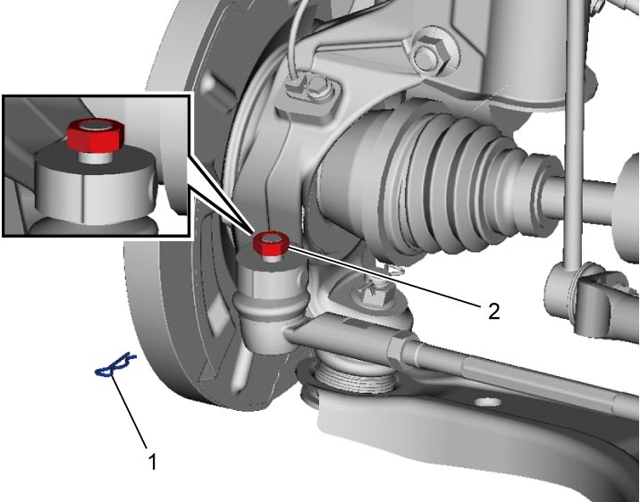
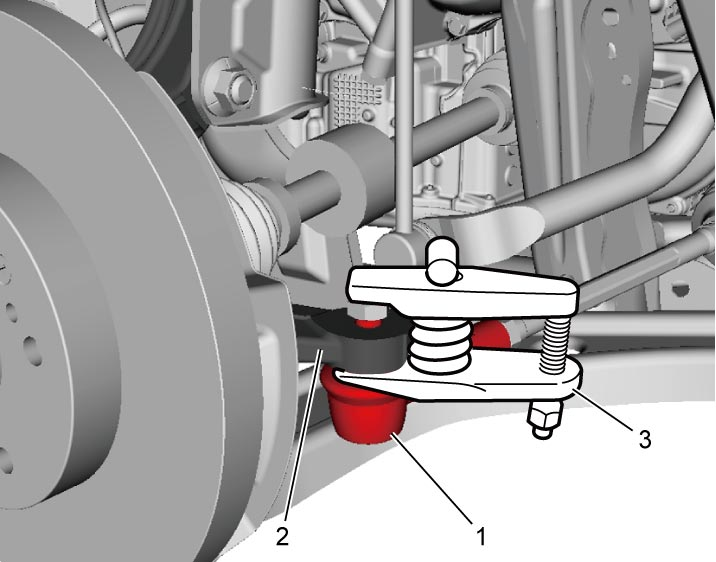
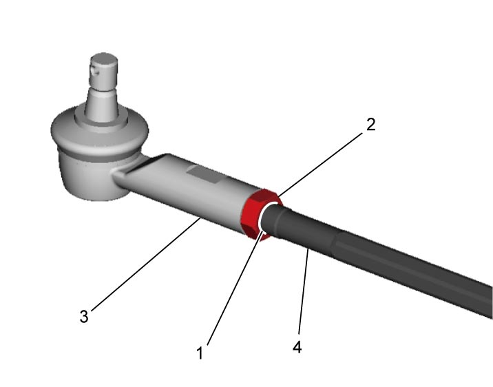
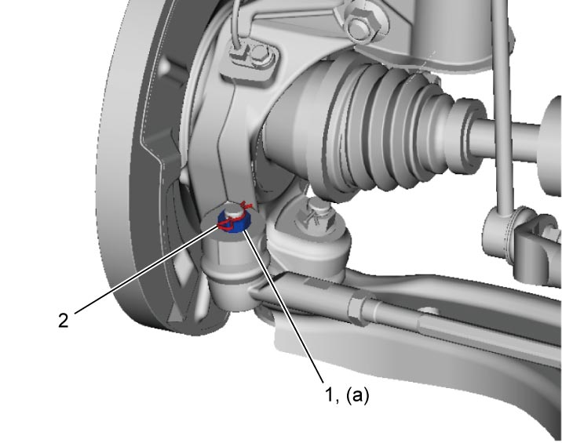

6B
| Tie-Rod End Removal and Installation |
Removal
1)Hoist vehicle, and then remove front wheel. 
2)Remove clip (1), and loosen tie-rod end nut (2) up to end off the stud as shown.


 "Expand image")
3)Disconnect tie-rod end (1) from steering knuckle (2) using ball joint remover (3).
 CAUTION:
CAUTION:
When tie-rod end is disconnected, ball joint remover may fall off and cause personal injury.
Suspend the ball joint remover from the vehicle body using a rope to prevent the remover from falling off.

 "Expand image")
4)Remove tie-rod end nut.
5)To facilitate adjustment after installation, make mark (1) of tie-rod end lock nut (2) position on tie-rod end thread. Then, loosen lock nut and remove tie-rod end (3) from tie-rod (4).

 "Expand image")
Installation
1)Install tie-rod end lock nut (2) and tie-rod end (3) to tie-rod (4). Align lock nut with mark (1) on tie-rod thread.
2)Connect tie-rod end to steering knuckle. Tighten new tie-rod end nut (1) to specified torque.
3)Install new clip (2).

 "Expand image")
4)Install front wheel.
5)Check for toe.